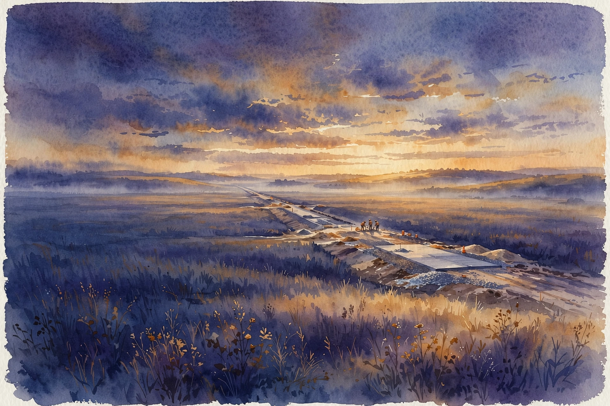
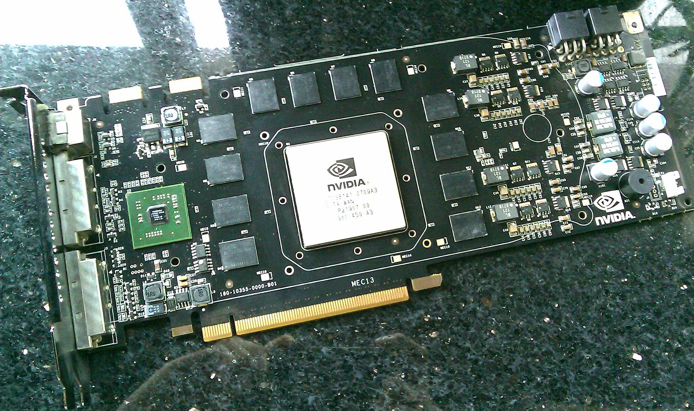
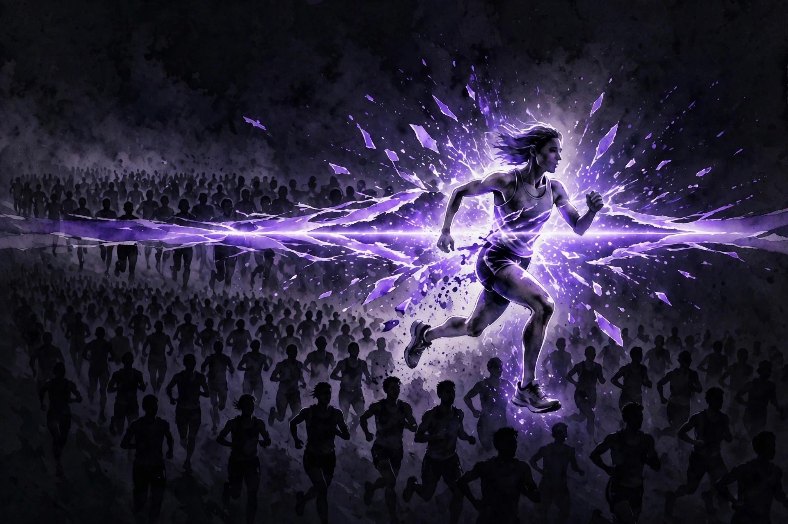
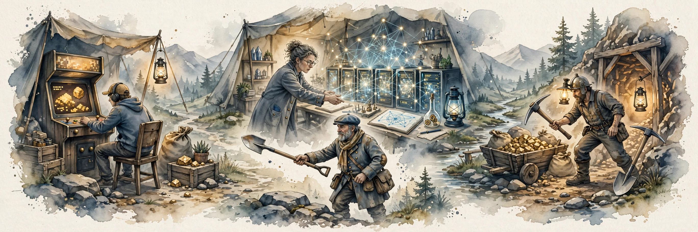

Acquired · Episode 8 · Companion
NVIDIA Part II: The Machine Learning Company
The most extreme patience story in business. NVIDIA bets everything on CUDA years before anyone wants it, survives an 80 percent collapse, waits a decade, and gets rescued by AlexNet. This companion follows the episode chapter by chapter, 2006 to 2022.

Illustration. The CUDA bet: building the road before anyone arrives. AI-generated watercolor.
Listen. The official Acquired episode audio (about 2 hr 20 min). Times below are proportional estimates from the transcript, which carries no timestamps.
The Wisdom Index: every nugget in this companion
- If we do not build it, they cannot come
- The driver team became the CUDA team
- 80 percent down, still building
- The clown-car detour
- Twenty-five to fifteen
- The market takes a decade to believe
- Three rushes, one shovel
- You cannot rack this
- The card with no video out
- A billion versus thirty billion
- One percent of a hundred trillion
Source fact A claim from the episode transcript. Interpretation My read on what it means. Times marked ~ are proportional estimates from word position, since the transcript has no timestamps.
~00:07
Three Foundations from Part I

Photo. The GeForce 8800 Ultra board, a card from the GeForce 8800 line of the CUDA era. Source: Wikimedia Commons, public domain.
Source fact David picks up in 2004-2005 with three carryovers from the first decade. First, the six-month ship cadence: GeForce 256 in fall 1999, GeForce 2 in spring 2000, GeForce 2 Ultra in fall 2000, GeForce 3 in spring 2001 with programmable shaders. Competitors shipped on 18-month to two-year cycles. David compares Intel's architecture changes to new car body styles arriving every five or six years. NVIDIA shipped fundamentally new architectures at warp speed.
Second, the detail the previous episode missed: NVIDIA wrote its own drivers. Every other graphics card company let downstream partners write drivers. NVIDIA said no, we control this, so gamers get a good experience on any system. Ben calls it an Apple-esque view: accept the short-term pain of a bigger fixed cost base, employing all those driver engineers, for the long-term benefit of a great user experience.
Third, the position: after the tech crash the stock climbed from a sub-billion-dollar market cap to $5-6 billion in 2004-2005, just under $20 billion by mid-2007. Gaming alone looked like a great wave to surf.
Nugget 2 · Preparation
The driver team became the CUDA team
What happened. NVIDIA employed a large base of low-level software engineers because it wrote its own drivers, an Apple-esque cost everyone else skipped. That base became the team that built CUDA.
Why it matters. A cost center looked like discipline and quietly became the platform team. Nobody planned it. The decision that built the capability predated the opportunity by a decade.
The principle. Own the layer everyone outsources. The engineers you hire for quality today are the platform team you need tomorrow.
~00:18
The CUDA Bet: Build It Before Anyone Can Come
Source fact In 2006, 2007, and 2008, NVIDIA pours resources into what becomes CUDA: a way for developers to program the GPU for general-purpose computing, not just graphics. There is no clear market for it. The psychology, in the episode's telling, is twofold. Jensen is enamored with hardware that accelerates specific use cases. And the pitch inverts the movie line If we build it, they will come
: if we do not build it, developers cannot possibly come. Whether they will come is unknown. The capability has to exist first.
The scale: Ben searched LinkedIn for NVIDIA employees with CUDA in their title and found 1,100 people dedicated to the CUDA platform. David jokes he is surprised it is not 11,000.
Nugget 1 · Conviction
If we do not build it, they cannot come
What happened. NVIDIA funded a general-purpose GPU platform with no visible market. The logic was one step removed from the Field of Dreams: not that they would come, only that they could not come without it.
Why it matters. David's three-question test for platform plays (where is the market, at what scale, at what cost) returns a verdict of unknown markets, enormous scale, and huge cost. That screens out everyone except the unreasonable founder.
The principle. Some capabilities must exist before demand can form. Fund those with the cash cow, and measure in developers, not quarters.
~00:25
The 80 Percent Collapse
Source fact Wall Street mostly ignores the CUDA spend in 2006-2008 because gaming still grows. Then two things hit. AMD acquires ATI (announced 2006, closed 2007), so NVIDIA's remaining gaming competitor now has AMD's full resources. NVIDIA takes its eye off gaming, CUDA drives no revenue yet, and mid-2008 the company whiffs on earnings. From the ~$20 billion peak, the stock drops 80 percent. The financial crisis finishes the job.
The pain sequence
Market cap and stock, 2007 to 2022. Hover for detail.
Source: Acquired, NVIDIA Part II, ~00:25. Recovery of the $20B peak took until 2016.
Toy: the drawdown test
NVIDIA fell 80 percent and stayed down for years. Set a drawdown and a recovery growth rate to see the math. Illustrative model.
Nugget 3 · Discipline
80 percent down, still building
What happened. Any normal CEO calls Goldman Sachs and starts chopping. Jensen kept building CUDA through the 80 percent collapse and the 2011 50 percent drawdown.
Why it matters. The decision was funded by the gaming cash cow and protected by founder control. Drawdowns test conviction. This one tested it for eight years.
The principle. Decide the drawdown rule while calm. If the capability still compounds while the price falls, keep building.
~00:36
The Tegra Detour
Source fact In the penalty box, NVIDIA feels it must show shareholders something commercial. Mobile is hot, so in 2008 NVIDIA launches Tegra, a chip platform for phones. David calls it a clown-car detour. It is not what saves the company. Through the late 2000s and early 2010s the company goes sideways: some years grow 10 percent, some are flat, and in 2011 NVIDIA whiffs on earnings again and the stock takes another 50 percent drawdown. David's verdict: everybody else would quit. Not them.
Nugget 4 · Failure
The clown-car detour
What happened. Tegra chased the hot market to please shareholders. It failed. The decade's winner was the unglamorous platform nobody wanted in 2008.
Why it matters. The drawdown test needs a companion: distinguish a broken thesis from a delayed one. Tegra was broken. CUDA was delayed. The test is whether the underlying capability still compounds.
The principle. Never build the hot thing to escape the penalty box. Escape by building the right thing longer.
~00:46
AlexNet: The Big Bang

Illustration. AlexNet's 10-point upset: like breaking the four-minute mile. AI-generated watercolor.
Source fact In 2000, Princeton professor Fei-Fei Li starts ImageNet, inspired by the 1980s WordNet project that classified words: a database of millions of labeled images. In the 2012 ImageNet competition, a University of Toronto team submits AlexNet and wins by a lot. The measure: of 100 percent of the images, what percentage did you get wrong. AlexNet scored around 15 percent error. The best previous entries were around 25 percent. A ten-point margin in a field measured in single points. Ben: like breaking the four-minute mile, arguably more impressive, because they did not brute-force it, they tried a completely different approach. The network trained on NVIDIA GPUs, using CUDA. David calls it the big bang of artificial intelligence, and NVIDIA and CUDA were right there.
AlexNet's margin
ImageNet error rates, 2012. Hover for detail.
Source: Acquired, NVIDIA Part II, ~00:46. A 10-point margin where single points mattered.
Nugget 5 · Luck
Twenty-five to fifteen
What happened. A Toronto neural network won ImageNet 2012 by ten points, trained on NVIDIA GPUs with CUDA. The market noticed years later. The platform was ready the day the miracle arrived.
Why it matters. NVIDIA did not predict deep learning. It built general-purpose parallel compute with no market in mind, and AI arrived. The episode's trap card: preparation, not prediction.
The principle. Build general capabilities for a decade. When the specific use case arrives, be the only one ready.
~00:55
The Decade of Disbelief
“Every single one effectively comes in building on NVIDIA's platforms.”
Marc Andreessen, 2016 interview, as quoted on the episode (~00:55). Deep-learning startups were building on NVIDIA the way a generation built on Windows, then the iPhone.
Source fact Even after AlexNet, the market takes years to believe. Andreessen's 2016 line lands like the Windows analogy. Yet from 2012 to 2015, NVIDIA stock does not trade above $5 a share. At recording it is around $220, with a past-year high over $300. There was a crypto-driven run to about $65 in 2018, then a crash to $34 at the start of 2019. It takes until 2016 to get back to the $20 billion peak of 2007, when NVIDIA was just a gaming company. Almost ten years to recover the peak, because the market refused to believe a gaming chip company had become the foundation of AI. Jensen was on stage and on earnings calls saying this was the future. People stayed skeptical.
Nugget 6 · Markets
The market takes a decade to believe
What happened. AlexNet in 2012. Andreessen's blessing in 2016. The $20 billion peak not recovered until 2016. The stock sat under $5 from 2012 to 2015 while the AI foundation was already built.
Why it matters. Narratives lag technology by roughly a decade. The skeptics needed revenue proof, the data center 3X, not earnings-call claims.
The principle. When the technology is obviously working, check the revenue line, not the story. Numbers convert skeptics. Stories do not.
~00:57
Crypto: The Third Application

Illustration. Three rushes, one shovel: gaming, neural networks, crypto mining. AI-generated watercolor.
Source fact In 2018, a third class of embarrassingly parallel problems arrives: cryptocurrency mining. People buy consumer NVIDIA cards and build mining rigs. When the crypto winter hits in 2018, mining demand collapses, and crypto had grown so big for NVIDIA that revenue actually declines. The technical point: mining is trial and error with 10,000 parallel attempts, and it is matrix math. Same chips, third application in one decade: gaming, neural networks, crypto. One set of parallel cores, three gold rushes.
Nugget 7 · Platforms
Three rushes, one shovel
What happened. One chip architecture served gaming, neural networks, and crypto mining. All three are massively parallel problems built on matrix math. The applications were discovered, not designed.
Why it matters. The picks-and-shovels strategy only works if the shovel is genuinely general. GPUs turned out to be the universal substrate for parallel work.
The principle. Sell the substrate, not the application. The rush changes. The parallel cores do not.
~01:14
The Data Center Pivot
Source fact Data center GPUs are a different product from gaming cards. The A100 has no video out. It literally cannot drive a monitor, as a Linus Tech Tips video demonstrated. The RTX 3090, the most expensive consumer card, sold for $3,000 (later ~$2,000). The H100 sells for $20,000 to $30,000. NVIDIA walls the segments off: you cannot rack GeForces into a home data center rig.
In 2020, NVIDIA acquired Mellanox, an Israeli data-center networking company, for about $7 billion. Networking matters because a rack of GPUs is useless if they cannot talk to each other at speed. The revenue flip: two years before recording, the data center segment did about $3 billion, roughly half of gaming’s ~$6 billion after years sitting flat. Then it 3X'd in two years to over $10.5 billion a year. Gaming, king from 2006 through 2020 at nearly $6 billion, was dethroned.
The data-center 3X
Annual revenue in billions. Hover for detail.
Source: Acquired, NVIDIA Part II, ~01:14. 3X growth, about 87% a year compounded.
Nugget 8 · Pricing
You cannot rack this
What happened. NVIDIA physically and legally walls off its segments: the A100 cannot drive a monitor, and GeForces cannot go into data center racks. The same silicon sells for $3,000 to consumers and $20,000 to $30,000 to data centers.
Why it matters. Price discrimination is a product decision, not a price list. Segmentation captured the AI surplus that commodity pricing would have left on the table.
The principle. Wall off the segments. Price the value of the use case, not the cost of the silicon.
Nugget 9 · Systems
The card with no video out
What happened. The A100 has no video output. The data center product is not a graphics card at all. It is compute that happens to come from a graphics lineage.
Why it matters. The product definition changed while the brand stayed. Let the form follow the workload, not the company history.
The principle. When the workload moves, redesign the artifact. Keep the name. Drop the ports.
~01:25
The 2022 Numbers and the Trillion-Dollar Pitch
Source fact At recording: about 20,000 employees, $27 billion in annual revenue, roughly $8 billion of free cash flow a year, $21 billion in cash, a ~$500 billion market cap, the eighth largest company in the world. Growth: 60 percent revenue growth last year at a 30-year-old company, versus Google's 40 percent and Microsoft's 10-20 percent. Valuation: roughly three times Apple's price-to-sales ratio and nearly twice Microsoft's. Google did $257 billion in revenue with AdWords alone at $43 billion in Q4 2021, so NVIDIA's revenue is an order of magnitude smaller than the FAANGs. The multiple bets that the revenue arrives.
The bull case comes from NVIDIA's own investor day: serve customers representing a $100 trillion opportunity and capture 1 percent of it. Automotive alone is pitched as a $300 billion piece of the TAM, against current automotive revenue of around $1 billion, barely growing, noted with skepticism. The bear case: Cerebras sells a $2 million hyper-specialized training chip versus NVIDIA's $20-30K chip. Google keeps making noise about its own silicon. The CUDA amortization only works if the 3 million developers keep growing.
Fabless capital efficiency
Annual CapEx in billions. Hover for detail.
Source: Acquired, NVIDIA Part II, ~01:25. Fabless keeps the platform economics, and the dependency.
Nugget 10 · Capital
A billion versus thirty billion
What happened. NVIDIA spends about $1 billion a year on CapEx. TSMC spends $30 billion. Being fabless means NVIDIA keeps the platform economics without the fab bill.
Why it matters. Capital efficiency funds R&D, software, and acquisitions instead of concrete. The mirror risk is total dependence on TSMC's fabs.
The principle. Outsource the commodity layer, own the platform layer. Know exactly who can shut you down.
Nugget 11 · Pitches
One percent of a hundred trillion
What happened. NVIDIA's investor day pitch: a $100 trillion opportunity, capture 1 percent. At $27 billion in revenue and a $500 billion market cap, the multiple prices in a future that must arrive.
Why it matters. The hosts stay skeptical where the hosts should: automotive is pitched at $300 billion against $1 billion of actual revenue. TAM is not revenue. Believe the 3X that printed, not the 1 percent that is a pitch.
The principle. Grade a pitch by what already printed. The credible number is the one with a revenue line behind it.
The episode in seven lines
- If we do not build it, they cannot come. Fund the capability before the market.
- Own the layer everyone outsources. The driver team becomes the CUDA team.
- Decide the drawdown rule while calm. 80 percent down is a test, not a verdict.
- Never confuse prediction with preparation. AlexNet was luck met by readiness.
- Narratives lag technology by a decade. Check the revenue line.
- Wall off the segments. Price the use case, not the silicon.
- Grade the pitch by what printed. $10.5 billion beats $100 trillion.
Distilled from Acquired, NVIDIA Part II, April 2022. Full episode: youtube.com/watch?v=xU_rLZqlca4. Times are proportional estimates from the transcript.
~02:10
Outro
Source fact The episode closes with the sign-off, who got the truth, and the hosts' takeaways from the middle act of the NVIDIA story.